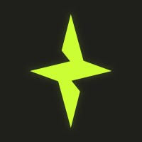
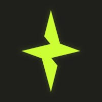
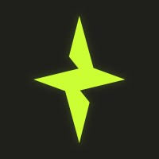

Game Showcase (Example)
 

This site is a fun, community-driven tracker for ex-Riot Games studios. Here are some possible upgrades—vote for your favorite or suggest your own!


Vote or suggest ideas on contact@riotspawntracker.com or @riotspawntracker!